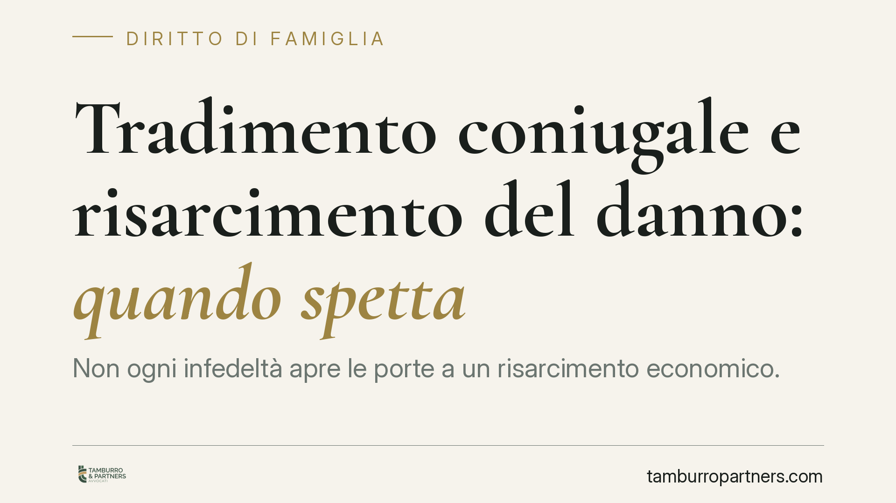

Tradimento coniugale e risarcimento del danno: quando spetta
Non ogni infedeltà apre le porte a un risarcimento economico. La Cassazione ha precisato che il tradimento coniugale genera responsabilità solo quando lede diritti fondamentali della persona, come la dignità o la salute. Un principio che incide sulla strategia processuale del coniuge tradito e sulle aspettative economiche legate alla crisi del matrimonio.

Il fatto e perché conta
L'idea che il tradimento subìto si traduca automaticamente in denaro è diffusa ma giuridicamente errata. La Corte di Cassazione ha chiarito che la violazione dell'obbligo di fedeltà non costituisce, di per sé, fonte di risarcimento. Serve qualcosa di più: la lesione di un diritto costituzionalmente protetto della persona.
La distinzione è netta e va compresa prima di avviare qualsiasi azione. Un conto è l'infedeltà come causa di addebito della separazione; altro è l'infedeltà come illecito civile che obbliga a risarcire un danno.
Inquadramento normativo
L'obbligo di fedeltà è previsto dall'art. 143 del codice civile tra i doveri reciproci dei coniugi. La sua violazione, sul piano familiare, può portare all'addebito della separazione a carico del coniuge infedele: chi ha causato la crisi coniugale può perdere il diritto al mantenimento e vedersi accollate le spese.
L'addebito, però, è una conseguenza interna al giudizio di separazione. Diverso è il risarcimento del danno, che si fonda sull'art. 2059 del codice civile, norma che riconosce il ristoro dei danni non patrimoniali nei casi previsti dalla legge.
La Cassazione ha collegato questa disposizione ai diritti fondamentali della persona tutelati dalla Costituzione. Il risarcimento scatta quando l'infedeltà, per le modalità con cui è consumata, lede la dignità del coniuge tradito o ne compromette la salute, anche psichica. Non basta il tradimento in sé: occorre un danno-conseguenza concreto e provato.
Cosa cambia per il coniuge tradito
La soglia è quindi alta. La giurisprudenza distingue tra la sofferenza fisiologica che accompagna la fine di un rapporto — non risarcibile — e la lesione di un diritto della persona che eccede quella soglia.
Rilevano, ad esempio, le modalità particolarmente umilianti o pubbliche con cui il tradimento è avvenuto, capaci di ledere la dignità e la reputazione del coniuge. Rileva anche il danno alla salute, quando l'infedeltà provoca una patologia medicalmente accertabile, come una sindrome depressiva documentata.
Un punto importante: il risarcimento è astrattamente configurabile anche nella separazione consensuale. Il fatto che i coniugi abbiano scelto un accordo condiviso non estingue automaticamente eventuali pretese risarcitorie per una lesione già maturata, salvo che non vi abbiano espressamente rinunciato.
Il nodo della prova
È qui che l'azione risarcitoria si gioca. Non è sufficiente dimostrare che l'altro coniuge è stato infedele: bisogna provare che quel comportamento ha determinato una lesione specifica di un diritto fondamentale e quantificarne le conseguenze.
Questo significa produrre documentazione medica, testimonianze sulle modalità del fatto, elementi che colleghino in modo credibile la condotta al danno lamentato. Senza questa prova, la domanda risarcitoria è destinata al rigetto, anche laddove l'addebito venga riconosciuto.
Cosa fare in concreto
- Distingui i piani. Tieni separata la richiesta di addebito nella separazione dalla domanda risarcitoria: seguono regole e presupposti diversi.
- Documenta il danno, non solo il tradimento. Raccogli certificazioni mediche, referti e ogni elemento che attesti una lesione alla salute o alla dignità.
- Valuta le modalità della condotta. Annota circostanze che rendano il tradimento offensivo oltre la normale sofferenza: pubblicità del fatto, contesti umilianti, coinvolgimento di terzi.
- Attenzione agli accordi di separazione. Prima di firmare un accordo consensuale, verifica se contiene rinunce che potrebbero precludere future pretese risarcitorie.
- Consultati prima di agire. Un'analisi preventiva della sostenibilità probatoria evita azioni destinate all'insuccesso e le relative spese.
In sintesi
Il tradimento non è un titolo automatico al risarcimento. La responsabilità civile del coniuge infedele esiste, ma resta un'ipotesi circoscritta, ancorata alla prova di una lesione effettiva di diritti fondamentali. Comprendere questo confine è il primo passo per impostare correttamente la propria posizione.
---
*Contributo informativo a cura di Tamburro & Partners - Avv. Giuseppe Tamburro. Non costituisce parere legale.*
Ogni famiglia ha il suo equilibrio.
Separazione, divorzio, affidamento, assegno: se vuoi un confronto riservato su una specifica situazione, scrivi allo studio. Ti rispondiamo entro un giorno lavorativo.